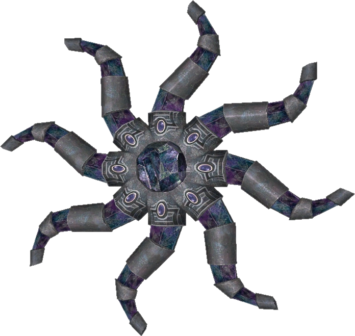
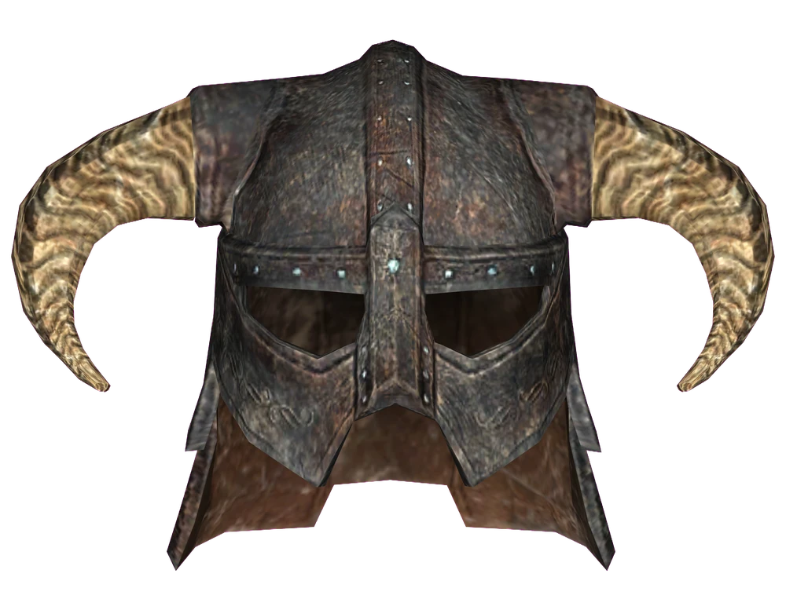
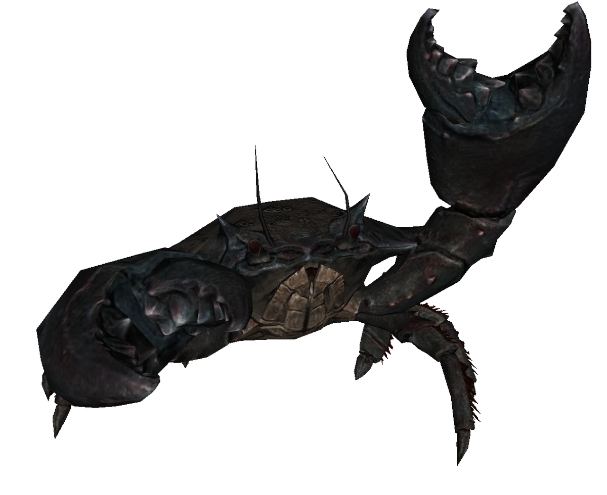

"M'aiq knows many things, no?"
If you're looking for an adventure, this site is here to help.
This site is intended to give you something to do in Elder Scrolls V: Skyrim or help you find what you're looking for, no matter if you are a veteran or a beginner or anything in between.
This handy handbook has it all, you can give it a try by clicking Random page and see where it will take you.
Still unsure where to start? Try the daily quest.
Daily quests provides you with something small and rewarding you can do in Skyrim. Generally they shouldn't take longer than 30 minutes.

Your daily quest
Looking for the best soul game in game? Here you go. Make sure to bring the star to the right person.
Catalog
Looking for the best armor or perhaps where to find the third word of Whirlwind Sprint?

Weapons

Magic

Armor

Shouts

Alchemy

Misc
Locations
